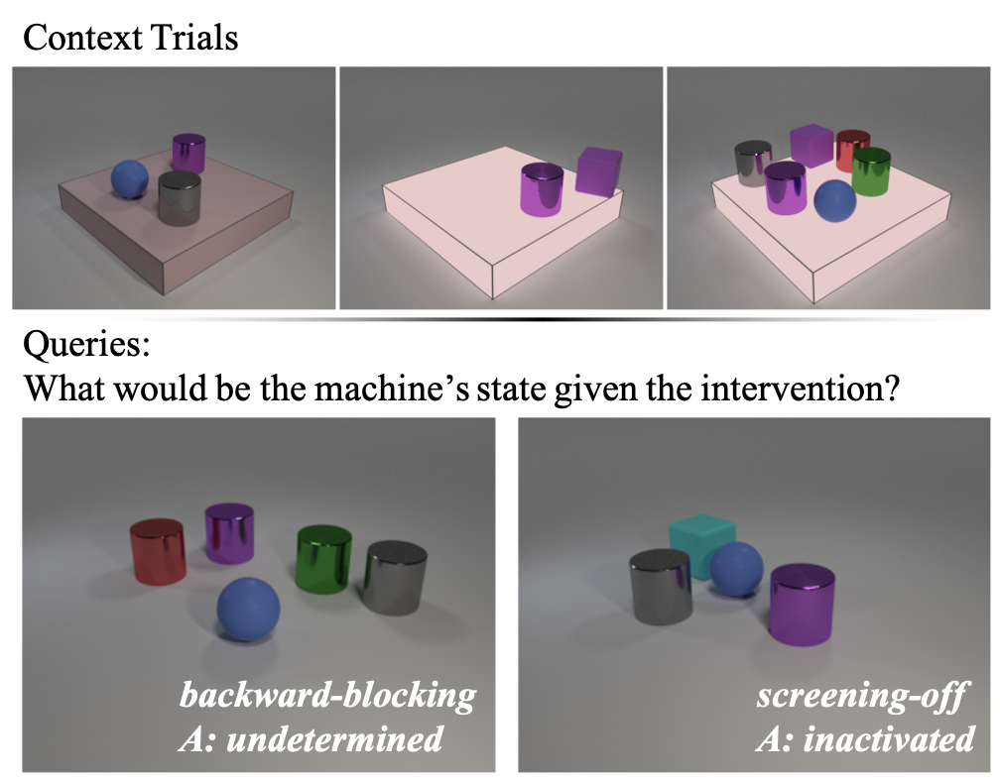
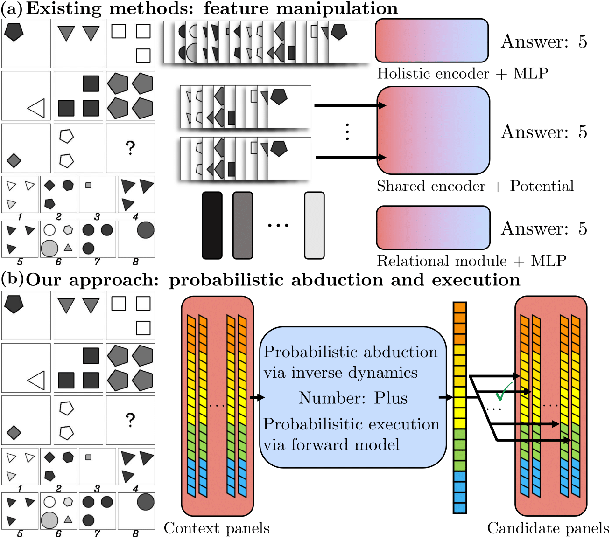
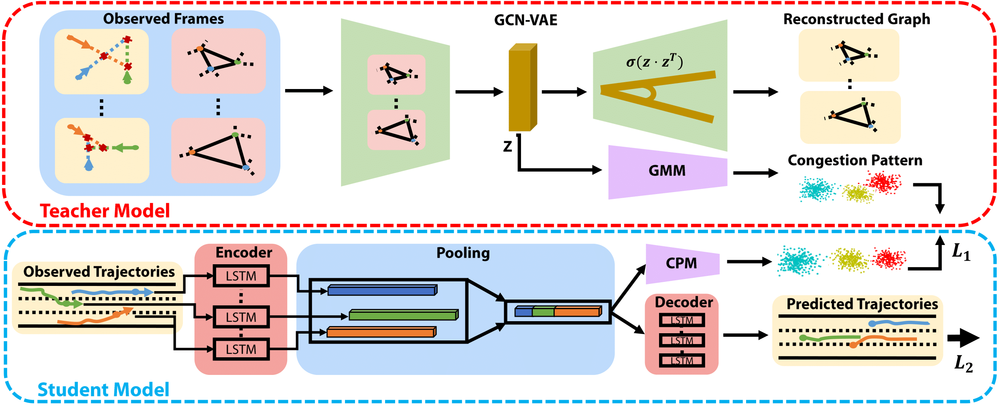
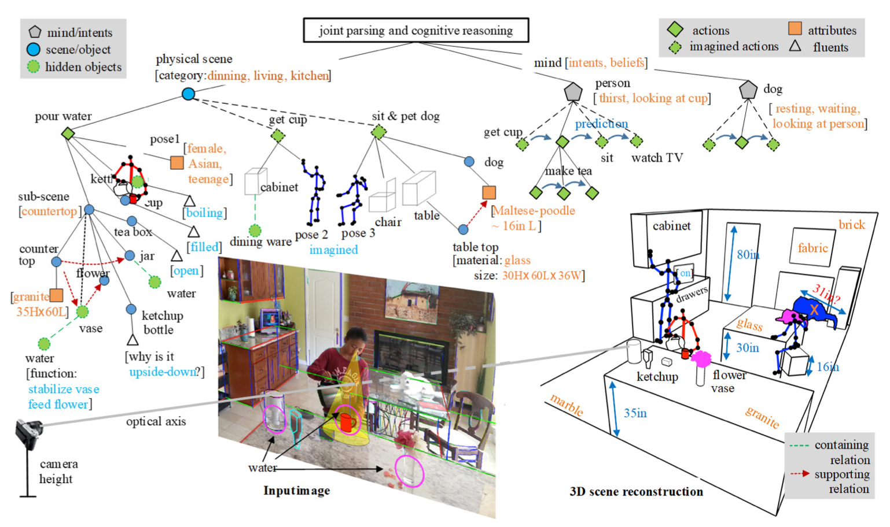
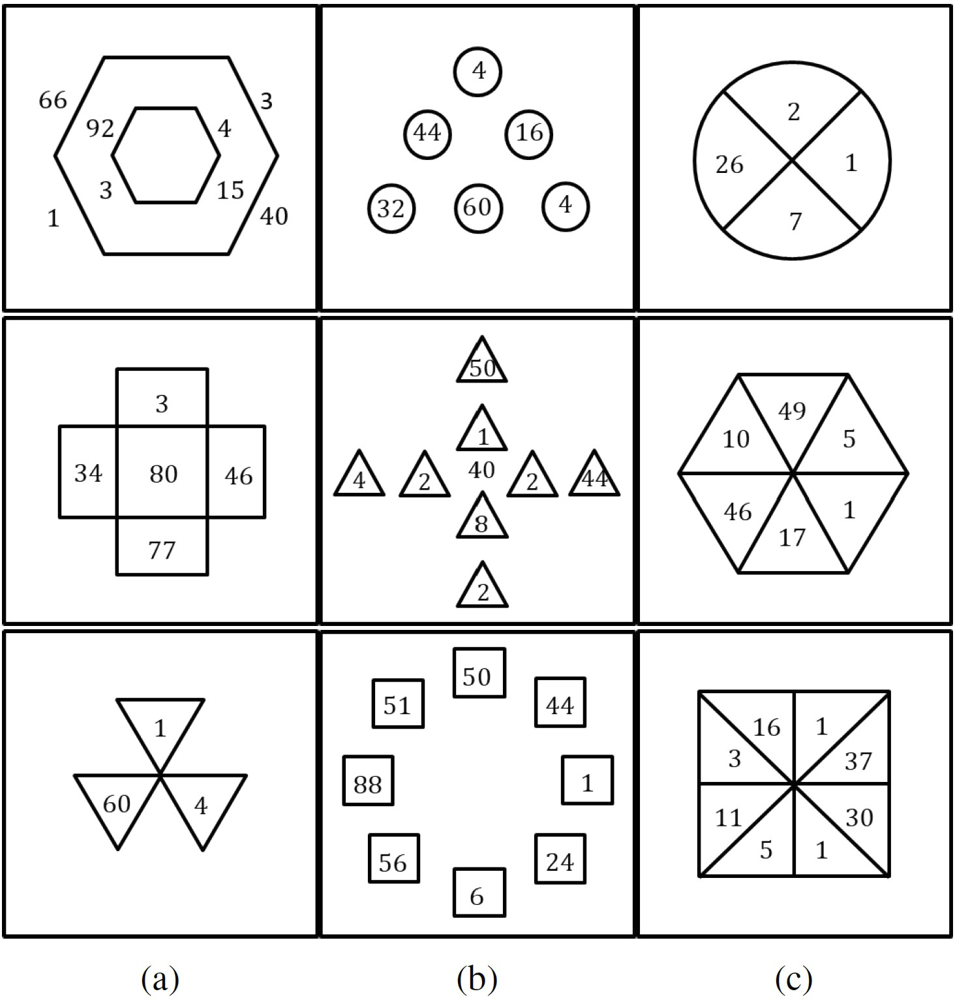
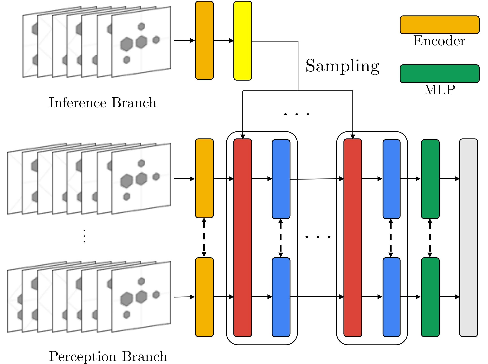
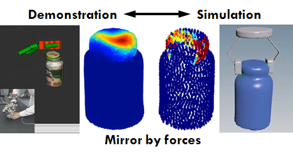

"The study of vision must therefore include not only the study of how to extract from images the various aspects of the world that are useful to us, but also an inquiry into the nature of the internal reprensentations by which we capture this information and thus make it available as a basis for decisions about our thoughts and actions." ‐ David Marr
News! Two papers accepted in CVPR 2021.
News! One paper accpeted in ICRA 2021.
News! Our position paper featured in Engineering.
News! One paper accepted as Oral in AAAI 2020.
News! One paper accepted as Spotlight in NeurIPS 2019.
News! One paper accepted in IROS 2019.
News! One paper accepted in CVPR 2019.
News! Two papers accepted in AAAI 2019.
About Me
I’m Chi Zhang (张驰)– a Ph.D. candidate of Department of Computer Science, University of California - Los Angeles. I’m a graduate student researcher at Center for Vision, Cognition, Learning and Autonomy (VCLA), advised by Professor Song-Chun Zhu.
My reseach interests include but are not limited to
- Computer Vision: Visual Reasoning, Abstract Reasoning
- Machine Learning: Neural-Symbolic Methods, Concept Learning, Reinforcement Learning
I used to work with Professor Dit-Yan Yeung at Hong Kong University of Science and Technology and Professor Deng Cai at my home institution, Zhejiang University.
I serve/served as
- Conference reviewer: CVPR 2019, ICCV 2019, AAAI 2020, CVPR 2020, ECCV 2020, NeurIPS 2020, AAAI 2021, ICLR 2021, CVPR 2021, ICCV 2021, ICML 2021
- Journal reviewer: IEEE Transactions on Image Processing (TIP)
CV / Email
Publications
-

ACRE: Abstract Causal REasoning Beyond Covariation
Chi Zhang, Baoxiong Jia, Mark Edmonds, Song-Chun Zhu, Yixin Zhu
CVPR 2021
-

Abstract Spatial-Temporal Reasoning via Probabilistic Abduction and Execution
Chi Zhang*, Baoxiong Jia
*, Song-Chun Zhu, Yixin Zhu
CVPR 2021
-

Congestion-aware Multi-agent Trajectory Prediction for Collision Avoidance
Xu Xie, Chi Zhang, Yixin Zhu, Ying Nian Wu, Song-Chun Zhu
ICRA 2021
-

Dark, Beyond Deep: A Paradigm Shift to Cognitive AI with Humanlike Common Sense
Yixin Zhu, Tao Gao, Lifeng Fan, Siyuan Huang, Mark Edmonds, Hangxin Liu, Feng Gao, Chi Zhang, Siyuan Qi, Ying Nian Wu, Joshua B. Tenenbaum, Song-Chun Zhu
Engineering, Volume 6, Issue 3
-

Machine Number Sense: A Dataset of Visual Arithmetic Problems for Abstract and Relational Reasoning
Wenhe Zhang, Chi Zhang, Yixin Zhu, Song-Chun Zhu
AAAI 2020
Oral
-

Learning Perceptual Inference by Contrasting
Chi Zhang*, Baoxiong Jia
*, Feng Gao, Yixin Zhu, Hongjing Lu, Song-Chun Zhu
NeurIPS 2019
Spotlight (2.43% acceptance rate)
-

Learning Virtual Grasp with Failed Demonstrations via Bayesian Inverse Reinforcement Learning
Xu Xie
*, Changyang Li
*,
Chi Zhang, Yixin Zhu, Song-Chun Zhu
IROS 2019
-

RAVEN: A Dataset for Relational and Analogical Visual rEasoNing
Chi Zhang*, Feng Gao
*, Baoxiong Jia, Yixin Zhu, Song-Chun Zhu
CVPR 2019
-

MetaStyle: Three-Way Trade-Off Among Speed, Flexibility, and Quality in Neural Style Transfer
Chi Zhang, Yixin Zhu, Song-Chun Zhu
AAAI 2019
-

Mirroring without Overimitation: Learning Functionally Equivalent Manipulation Actions
Hangxin Liu, Chi Zhang, Yixin Zhu, Chenfanfu Jiang, Song-Chun Zhu
AAAI 2019
-

Learning Unmanned Aerial Vehicle Control for Autonomous Target Following
Siyi Li, Tianbo Liu, Chi Zhang, Dit-Yan Yeung, Shaojie Shen
IJCAI 2018
-

Question Retrieval for Community-based Question Answering via Heterogeneous Social Influential Network
Zheqian Chen, Chi Zhang, Zhou Zhao, Chengwei Yao, Deng Cai
Neurocomputing, Volume 285
-

A Method of Exact 3D Modeling Based on Natural Gestures via Data Gloves (in Chinese)
Xiangdong Li, Sihong Lv, Yikun Wang, Xiaowo Sun, Chi Zhang
Patent publication number: CN104778746 B
Education
-

Ph.D. in Computer Science
09.2017 - Summer 2022 (expected) | Los Angeles, California, USA
University of California, Los Angeles
-
Master of Science in Computer Science
09.2017 - 03.2019 | Los Angeles, California, USA
University of California, Los Angeles
-

Bachelor of Engineering in Computer Science
09.2013 - 06.2017 | Hangzhou, Zhejiang, China
Zhejiang University
Experience
-

Machine Learning Engineer
Autonomous driving
04.2017 - 06.2017 | Hangzhou, Zhejiang, China
Didi Research Institute
-

Research Intern
Target following with drones
09.2016 - 03.2017 | Clear Water Bay, Kowloon, Hong Kong
Hong Kong University of Science and Technology
-
Research Assistant
Automatic number plate detection
03.2015 - 06.2016 | Hangzhou, Zhejiang, China
State Key Lab of CAD & CG, Zhejiang University
Projects
-

MXNet
09.2016 - 04.2017
-

Automatic Number Plate Detection
03.2015 - 06.2016